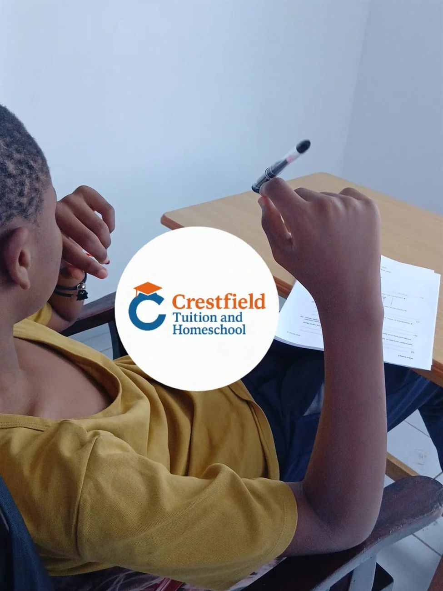
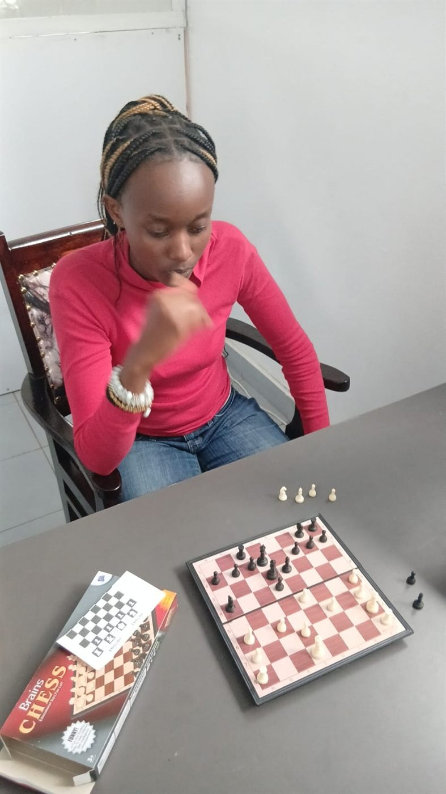

Program Overview
Bridging Primary Education to IGCSE Excellence
Crestfield's Cambridge Checkpoint program serves as the crucial bridge between primary education and IGCSE studies, offering structured tutoring and homeschool guidance for learners aged 11 to 14 years. This lower secondary program blends Cambridge tuition with checkpoint-focused homeschool support, helping students develop academic skills, subject knowledge and critical thinking. Families appreciate the clarity of our Cambridge homeschool approach as their children prepare for IGCSE and A Levels pathways.
Through Cambridge's internationally benchmarked assessments, students receive detailed feedback on Mathematics, English and Science, helping them identify strengths and improvement opportunities before advancing to IGCSE.

Core Subjects
Comprehensive Academic Curriculum
English
Advanced reading comprehension, analytical writing, literature study, and communication skills aligned with Cambridge Lower Secondary English framework.
Mathematics
Algebra, geometry, statistics, and problem-solving skills that build the mathematical foundation required for IGCSE Mathematics success.
Science
Integrated Biology, Chemistry, and Physics with practical experiments, scientific methodology, and preparation for IGCSE Sciences.
ICT & Digital Skills
Computer applications, coding fundamentals, digital research skills, and responsible technology use for the modern learner.
Cambridge Assessments
Progress Tracking & Checkpoint Tests
Diagnostic Testing
Cambridge Checkpoint tests identify individual strengths and areas for development in core subjects.
Detailed Feedback
Comprehensive reports help students, parents, and teachers understand progress and plan next steps.
IGCSE Readiness
Checkpoint results guide subject selection and preparation strategies for IGCSE studies.
International Benchmarking
Compare performance against global Cambridge standards and international student cohorts.
Online Homeschooling
Flexible Secondary Education
Our Cambridge Checkpoint online homeschooling program provides the structure and support needed for successful lower secondary education. Students benefit from live expert teaching, recorded lessons for review, and a supportive online learning community.
- ✓ Live interactive classes with subject specialists
- ✓ Structured study plans aligned with Cambridge framework
- ✓ Regular checkpoint assessments and progress tracking
- ✓ Preparation for successful IGCSE transition

Student Benefits
Why Students Succeed at Checkpoint
Critical Thinking Skills
Develop analytical and evaluative skills essential for IGCSE and higher education success.
Study Skills Development
Learn effective note-taking, time management, research, and revision techniques.
Exam Preparation
Build confidence with Cambridge-style assessments and exam technique practice.
Personalized Learning
Tailored support addressing individual learning needs and academic goals.
Global Recognition
Cambridge Checkpoint is recognized by schools worldwide as a marker of academic achievement.
Smooth IGCSE Transition
Seamless progression to IGCSE with strong foundational knowledge and skills.
Prepare for IGCSE Success
Join Crestfield's Cambridge Checkpoint program and build the strong foundation needed for excellent IGCSE results.
FAQ